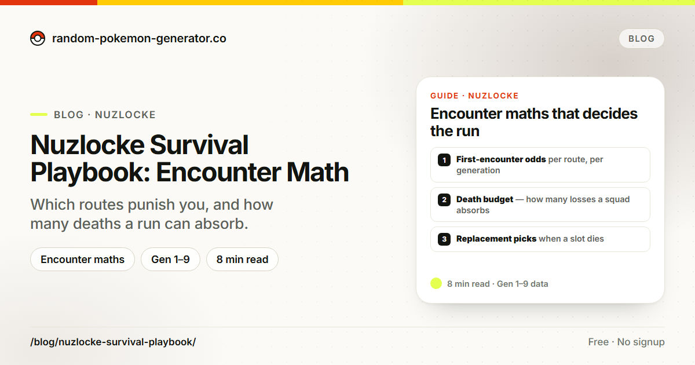
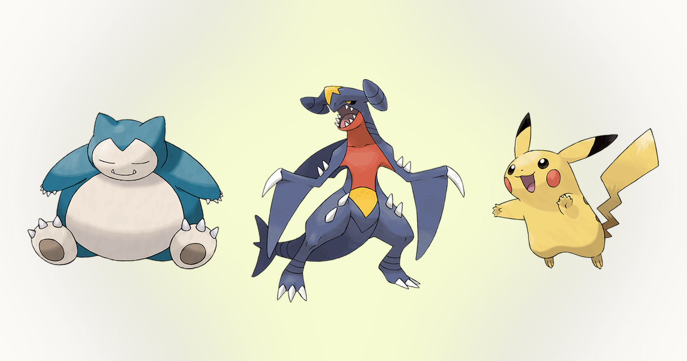
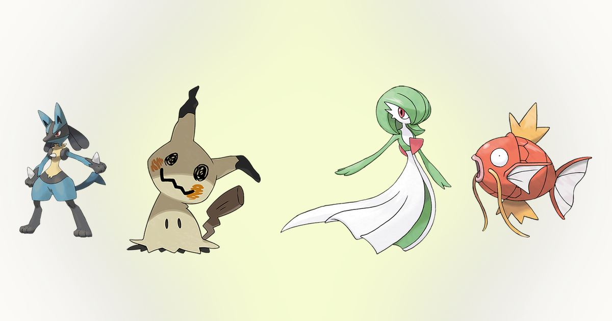
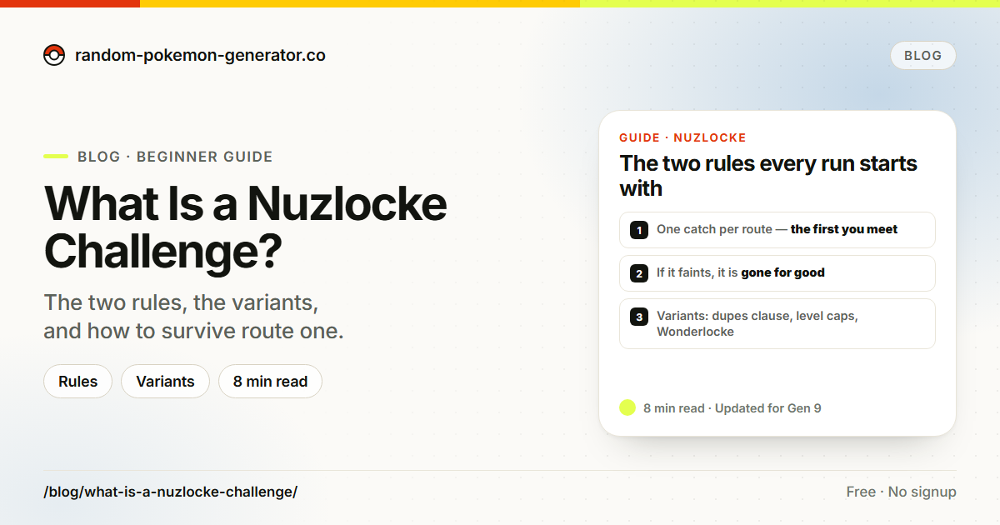
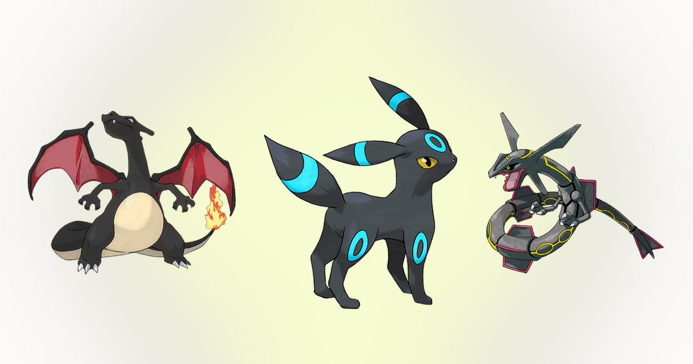

ヌズロック生存術：エンカウントの計算
1匹捕まえるたびに相性がどう変わるのか、なぜ同じルートで同じポケモンが重なるのか、ランダムな交代が実際に何をもたらすのか。1,025種を対象に計算しました。
ガイドを読む →ガイド · 確率の計算 · 戦略
ツールの裏側にある仕組みを、数字のまま説明します。色違いの確率、性格、ヌズロックの立ち回り、チーム構成についてのガイドで、書いてあることはすべてゲーム内のデータと照らして確かめています。

1匹捕まえるたびに相性がどう変わるのか、なぜ同じルートで同じポケモンが重なるのか、ランダムな交代が実際に何をもたらすのか。1,025種を対象に計算しました。
ガイドを読む →
10%の補正が実際どれくらい効くのか、使わない数値を下げるという原則をガブリアスを例に、速いアタッカーでの素早さと火力の比べ方、受け役やトリックルームで表がどう反転するのか、そして性格の間違いがミントで直せるようになった理由まで。
ガイドを読む →
3つの質問で分ける判定基準、SからDまでのティア表（最上位にルカリオとミミッキュ、最下位にラブカスとアンノーン）、そして誰もすぐには決められない5匹、ピカチュウ、イーブイ、サーナイト、メタモン、コイキング。まずはこの表に反論してみてください。
ガイドを読む →
2010年のウェブコミックが偶然生み出した、ポケモンで最も大きくなった縛りルール。3つの基本ルール（最初に出会った1匹だけ捕まえる、ひんしはロスト、全員にニックネーム）、足しておきたい追加条項、そして3人目のジムリーダーを越えるための下準備や身代わりの交代といった、初心者の習慣まで。
ガイドを読む →
色違いの有名な数字がどこから来たのか。基本確率1/8192を生んだ16ビットの計算、第6世代の一度きりの基準変更、国際孵化の追加抽選が1/683に届く仕組み、ひかるおまもりを重ねてちょうど1/512になる理由、そして狩りを始める前に知っておきたい連続ハズレの確率まで。
ガイドを読む →このブログの範囲
ここはツール群の文章版です。ツールは答えをすぐ出します。チームを組む、確率を計算する、性格を調べる。ブログはその下にある理屈を説明するので、中身の見えない箱を信じるのではなく、自分の頭で確かめられます。
色違いの確率、捕獲の計算、抽選の分布、長い狩りの統計。答えだけでなく式も載せます。1/8192がどこから来るのか、独立した抽選に「そろそろ来る」がない理由、1,000回の狩りで累積確率をどう読むのか。「ポケモンの色違い確率を解説」では、基本確率から国際孵化＋ひかるおまもりの上限まで一通り扱っていて、 色違いの出現率 計算機とセットで使うのがおすすめです。
性格、役割、素早さの段階、守りの補完。強いポケモン6匹を、強いチーム1つに変える考え方です。性格の仕組みを深掘りした回では（ポケモン性格表 が対になるツールで、「ポケモンの性格を徹底解説」が本編のガイドです）、タイプの範囲をどう設計するかは パーティ編成、そして手で組むにしてもランダム生成から始めるにしても使える、パーティ作りの理論。
ヌズロックのルールセット、単タイプ縛り、ランダムライズ風のドラフト、ルーレットで選ぶパーティ。このサイトのツールでそのまま遊べる形です。出会いは ヌズロック編成で引いて、 ポケモンルーレットからドラフトし、あるいは Random Pokemon Generator に運を任せて、その旅を勝てるものにするガイドを読んでください。
ツールボックスの新顔
ツールは増え続けています。まだ触っていないものがあれば、このブログの話を実際に試すには一番の近道です。
新しい参照ツールは、対戦プレイヤーが1匹捕まえたあとに必ず考える問いに答えます。このポケモンにはどの性格がいいのか。ポケモン性格表は25種類すべての性格を、上がる数値と下がる数値つきで絞り込み・並べ替えできる表にまとめました。種族値を読み取って性格を提案する機能もあり、物理、特殊、受け、トリックルームのどれ向きかを、レベル50の実数値と一緒に出します。同じ考え方を記事にしたのが、「ポケモンの性格を徹底解説」です。
ポケモンの色違い確率のページは、半分が資料で半分が計算機です。第2世代から第9世代までの基本確率、ひかるおまもりから LEGENDS アルセウスの大量発生まであらゆる上乗せ手段、そして自分の狩り条件を分数・パーセント・想定時間に変換するパネルがあります。今週のガイド、ポケモンの色違い確率を解説はその相方です。理由はガイドで読み、数字は計算機で出してください。
次のガイドは、ツールの裏の仕組みをもう一段深く扱います。出会いの計算を軸にしたヌズロック生存術と、ポケモン チームピッカーの防御マトリクスを使ったチーム範囲の歩き方です。
書くときの基準
記事で挙げる確率、種族値、仕様はすべて、ゲームの実際の処理と照らして確認しています。このサイトのツールを動かしているのと同じデータです。ソード・シールドの連戦ボーナスのように、コードから読むのではなくコミュニティが実測したものについては、そう書いたうえで確度のレベルを明記します。
確率の話を読むのは役に立ちますが、自分で計算するほうがもっと役に立ちます。各記事には、その内容を実際に試せるツールへのリンクを置いています。色違いの計算機でも、性格の判定でも、チーム編成でも同じです。
テーマは、プレイヤーが実際に検索し、質問してくることから来ています。色違い狩りの計算、特定のポケモンに向く性格、ヌズロックの生き残り方、ドラフトやパーティゲームに生成ツールをどう使うか。たとえば Smash or Pass と このポケモンだあれ？。ガイドにする価値のある疑問があれば、 このサイトについて & お問い合わせ ページから連絡してください。
ポケモンのゲームは仕様が変わるのが早く、ガイドは戦略より先に古びます。新しい世代が仕組みを足したとき、たとえば新しい色違いの方法、変わった孵化の挙動、新しい性格アイテムが出たときは、同じ更新の中で該当記事を直し、リポジトリの変更履歴に何が動いたかを残しています。記事とゲーム内の挙動が食い違ったら、直すのは記事の側です。
ブログのトップでは、サイト自体の新着も追っています。久しぶりに来た読者が、全部読み直さずに最新のツールへ飛べるようにするためです。月ごとのまとめに、変わったページと、それを説明するガイドを並べています。
ポケモンを始めたばかりなら、ヌズロックの記事が定番の入口です。旅を生き残る物語に変えるルールを説明し、それを管理するヌズロック編成へつないでいます。対戦を意識するなら、性格のガイドと Smash or Pass のティア表が、専門用語なしで序列を説明してくれます。色違いを狙うなら、狩りを始める前に確率の記事を1本どうぞ。方法が変わったときは、また戻ってきてください。
どのガイドも、ツールの入口で終わります。読むことと遊ぶことの距離を、できるだけ縮めておきたいからです。記事を1本選んで、そこで紹介されているツールを開けば、次のプレイは実りあるものになります。
FAQ
仕組みが変わったときだけ書き直します。新しい狩り方、孵化の仕様変更、性格アイテムの追加があれば該当記事を改訂し、変更点はチェンジログに残します。カードの日付は記事を公開した日です。
第1〜9世代の本編に加えて、ツールが対応しているSwitch世代の作品です。Let's Go、LEGENDS アルセウス、ブリリアントダイヤモンド・シャイニングパール、LEGENDS Z-A が対象です。ポケモンGOはルールが別なので扱っていません。
リンクを貼っていただければ使えます。数字はツールと同じデータから都度計算しているので常に最新ですが、コピーした表はそうなりません。